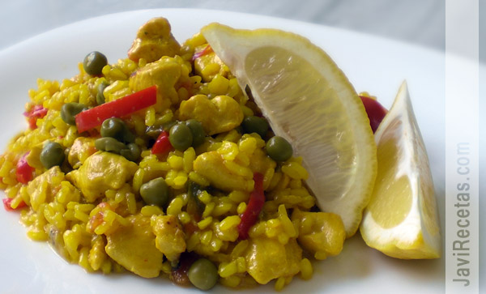

Cocinando en el A100
Sabor y Saber
.jpg)
Historial
Arroz con Pollo
Hoy toca arroz con pollo, pero no un arroz con pollo cualquiera, arroz con pechuga de pollo. Otro día veremos como hacer arroz con pollo con un pollo troceado pero hoy prefiero compartir con ustedes esta receta de mama, que siempre la hace con pechuga de pollo y que a mi me encanta.
Además el arroz hecho con pechuga de pollo es más cómodo de dar a comer a los niños y a mi personalmente también me parece muchísimo más fácil de comer, aunque tengo que reconocer que la receta tradicional con el pollo troceado deja un sabor algo más sabroso.
Porotos con Rienda
Preparación
-
Junta los porotos y el zapallo en una cacerola con 1 ½ litro de agua caliente con la tableta de caldo de longaniza MAGGI® desmenuzada, cocina a fuego fuerte durante 25 a 30 minutos o hasta que estén bien cocidos.
-
Mientras y aparte calienta una sartén con el aceite indicado y agrega la cebolla con el ajo, saltea durante unos minutos hasta ablandarlos levemente. Condimenta con el ají color y el orégano, cocina nuevamente durante unos minutos.
-
Agrega este sofrito a la olla con los porotos y agrega los tallarines, cocina durante 8 a 10 minutos aproximados hasta cocer los fideos completamente y espesar levemente la preparación. Una vez listo sirve cuando gustes.